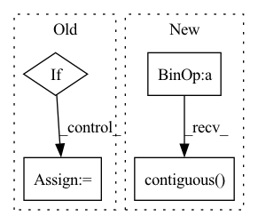

Pattern ID :3560

Before Change
def forward(self, inputs, targets):
enc_output, i_mask = None, None
if self.has_inputs:
i_mask = utils.create_pad_mask(inputs, self.src_pad_idx)
enc_output = self.encode(inputs, i_mask)
t_mask = utils.create_pad_mask(targets, self.trg_pad_idx)
After Change
// Reshaping features
sizes = padded_input.size() // B x H_1 (channel?) x H_2 x T
padded_input = padded_input.view(sizes[0], sizes[1] * sizes[2], sizes[3])
padded_input = padded_input.transpose(1, 2).contiguous() // BxTxH
encoder_padded_outputs, _ = self.encoder(padded_input, input_lengths)
pred, gold, *_ = self.decoder(padded_target, encoder_padded_outputs, input_lengths)
In pattern: SUPERPATTERN
Frequency: 3
Non-data size: 4
Instances
Fragment ID: 17644269
Project Name: qute012/kosr
Commit Name: b7d24b0d835254fd425224eba3421a3b7224e55f
Time: 2021-01-12
Author: ejrwls012@gmail.com
File Name: model/transformer/transformer.py
M Class Name: Transformer
N Class Name: Transformer
M Method Name: forward(4)
N Method Name: forward(3)
M Parent Class: nn.Module
N Parent Class: nn.Module
M File Name: model/transformer/transformer.py
N File Name: model/transformer/transformer.py
M Start Line: 19
M End Line: 28
N Start Line: 18
N End Line: 34
'>
Before Change
Returns:
Tensor: batch x height x width
if isinstance(factor, (int, float)):
out = image * (self.c_table * factor)
else:
b = factor.size(0)
table = self.c_table.expand(b, 1, 8, 8) * factor.view(b, 1, 1, 1)
After Change
def forward(self, x: torch.Tensor, height: int, width: int) -> torch.Tensor:
k = 8
batch_size = x.shape[0]
x_reshaped = x.view(batch_size, height // k, width // k, k, k)
x_transposed = x_reshaped.permute(0, 1, 3, 2, 4)
out = x_transposed.contiguous().view(batch_size, height, width)
return out
'>
Fragment ID: 17644271
Project Name: lornatang/real_esrgan-pytorch
Commit Name: edfbb6820fc2084c2ffe132e9b64a348a323d1e7
Time: 2022-06-16
Author: liuchangyu1111@gmail.com
File Name: imgproc.py
M Class Name: CDequantize
N Class Name: _DeBlockSplitting
M Method Name: forward(4)
N Method Name: forward(3)
M Parent Class: nn.Module
N Parent Class: nn.Module
M File Name: imgproc.py
N File Name: imgproc.py
M Start Line: 1698
M End Line: 1711
N Start Line: 1374
N End Line: 1379
'>
Before Change
assert (x.data.dim() == 4)
_, _, tH, tW = target_size
if inference:
B = x.data.size(0)
C = x.data.size(1)
H = x.data.size(2)
W = x.data.size(3)
After Change
//H = x.data.size(2)
//W = x.data.size(3)
return x.view(x.size(0), x.size(1), x.size(2), 1, x.size(3), 1).\
expand(x.size(0), x.size(1), x.size(2), target_size[2] // x.size(2), x.size(3), target_size[3] // x.size(3)).\
contiguous().view(x.size(0), x.size(1), target_size[2], target_size[3])
else:
return F.interpolate(x, size=(target_size[2], target_size[3]), mode="nearest")
'>
Fragment ID: 17644289
Project Name: tianxiaomo/pytorch-yolov4
Commit Name: 1ff5a1085ce0c1b35c2ea45b707166ac404e0b66
Time: 2020-08-11
Author: ersheng@nvidia.com
File Name: models.py
M Class Name: Upsample
N Class Name: Upsample
M Method Name: forward(4)
N Method Name: forward(4)
M Parent Class: nn.Module
N Parent Class: nn.Module
M File Name: models.py
N File Name: models.py
M Start Line: 23
M End Line: 36
N Start Line: 25
N End Line: 39